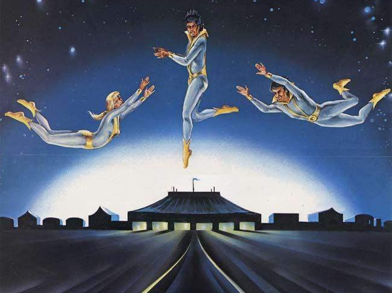

Today at 19.pm an amazing show
Our circus was created in 1886 by M. Loyal who was known as the best tamer of the 19th century. He made a show with such different animals as tigers, lions, zebra and chimpanzees at the same time on stage. This show traveled accross Europe for years, but stopped due to the first world war. In 1921 his children decided to restore his former show, but they didn't have the talent of their father who was too old to do it again. That's why they change the show in a new one, more spectacular but not so dangerous
Comming directly from the confines of the universe, the Flying Galaxies, their last show on Mars was admired by more than one million spectaculartors. The most spectacular trapeze artists ever seen on Earth, the show you shouldn't miss, flying through the marquee at lightning speed, you'll remenber them for the rest of your life. An experience you have to live...
We offer you the gift of your dreams, a souvenir that will fill you with pleasure, your children will be so proud and happy to have it that they won't ask you anything more. What a pleasure to have a living stuffed tiger that will keep its small size for the rest of its life.